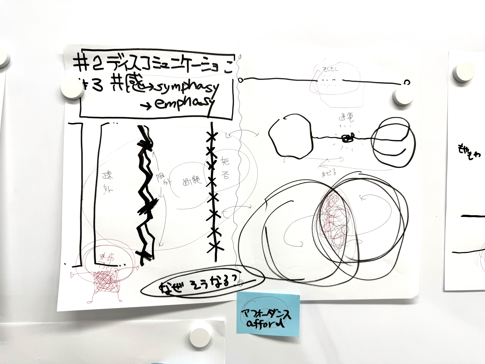
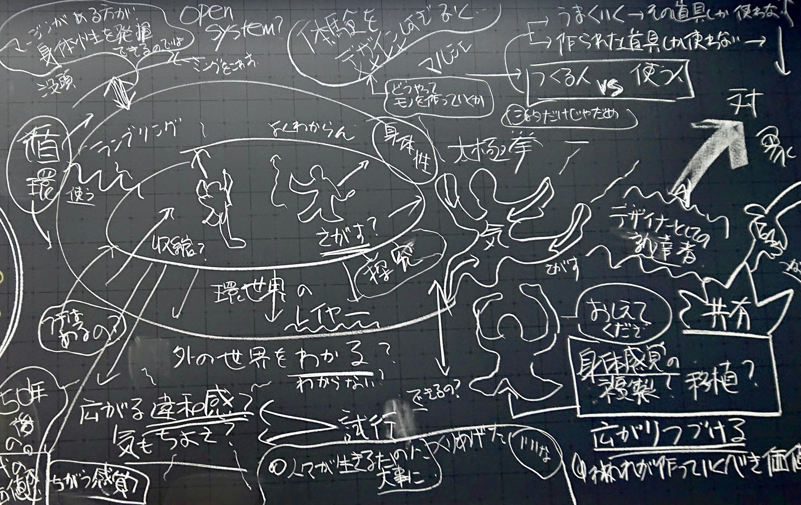

ビジネス・研究・実践を往還して体系化した知見から、領域横断的なデザイン知を提案する。
「自分をとりまくデザイン」を読み解き、現場への実装を目指す。
デザイン要素はすべて、何らかの関係性を持っている。
時系列、工程、流通、マーケットニーズ、コスト——それらが絡み合い、一つの系をなしている。
つながり、循環する系を「デザイン環世界」と呼ぶ。
世の中のデザインは、すべてが完璧に完成されたものではない。
デザインは人を疎外することがある。ときに危害にまで至る。
デザイン環世界におけるコミュニケーション不全ー故障、断線、メンテナンス不足ーを探し、修理しよう。
自分独自の判断基準を構築し、「デザインの目利き」になろう。
自分自身の言葉で、あなたにしかできないナラティブを話してほしい。

まちを少し歩くだけで、わかりにくい標識、不愉快な広告表現、誰かを排除するベンチ、消えかけた案内表示に出会う。
デザイン成果物とユーザのあいだで、コミュニケーションがどこかで断絶している。
誰が疎外されているのか。なぜそのような事態が起きるのか。状況に隠された社会課題とは何か。
自分で撮影した写真を一次資料として、考察と議論を重ねる。

製品やサービスに対したとき、人は自分がユーザかどうかを瞬時に判断する。
極めてコアな層に熱狂的に受け入れられるデザインから、誰をも疎外しないデザインまで
——共感が生まれるプロセスと、その設計可能性を考察する。
ディスコミュニケーションの対極として位置づけ、議論する。

一本のボールペンを手に取る。ロゴ、フォント、カラーリング、握り心地、パッケージ、流通箱の記号
——誰もが日常的に使う廉価な製品の中に、複数の領域にまたがるデザインが共存している。
製品内だけでは完結しない。開発から廃棄・リサイクルまで、各要素が枝分かれしながら循環する構造＝デザイン環世界を読み解く。

自分が育った、あるいは住むまちに思い入れのない人はいない。「ジモト」を出発点に、デザインがまちの中で実際に機能しているさまを観察し、固有のナラティブを構築して語る。発表者の数だけ、知らない土地を訪問できる。100%当事者として語ることが、最も強いプレゼンテーションの訓練となる。

スイーツを自分で選び、購入し、観察し、食べる。購入動機は何か。商品を魅力的に見せているデザイン要素はどこか。期待と実食の差異はあったか。強い動機に裏付けられた体験から、ブランディング・マーケティング・記号論まで接続する。廉価な量産品の「引き算のデザイン」が持つ高い技術にも注目する。
そのほかのテーマとして、「わたしの世界をデザインする」（地域コミュニティデザインの実践）、「かわいいデザイン」（内面世界の探索）、「わたしのイメージをデザイン」（キーワードからのリアルタイムイメージ制作）、「わたしのデザインをデザインする」（自作品のプレゼンテーションとリフレクション）を扱う。
自分をとりまくデザインに、あらためて気づく。日常の中に潜む多種多様な要素と関係性を発見する。
身近なモチーフを起点に、ミクロからマクロへ視点を動かす。フィールドワークと観察を通じて、情報を自力で集める。
集めた情報を構造化し、記録する。要素がどうつながり、何が欠けているかを考察する。
他者の視点と議論を経て、自分の評価基準をつくる。「良い・悪い」を自分の語彙で説明できるようになる。
講義で得た知を、作品制作とデザイナーとしての日常に持ち帰る。学びは教室の外で続く。